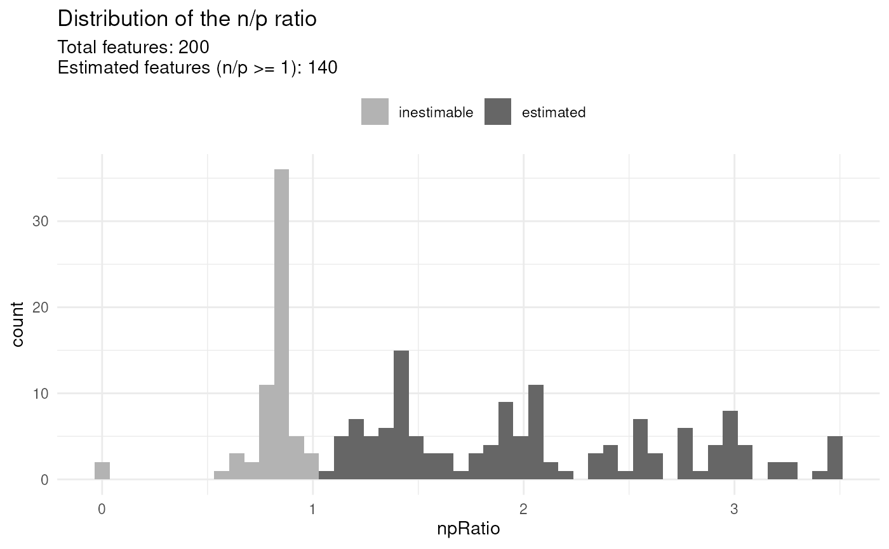
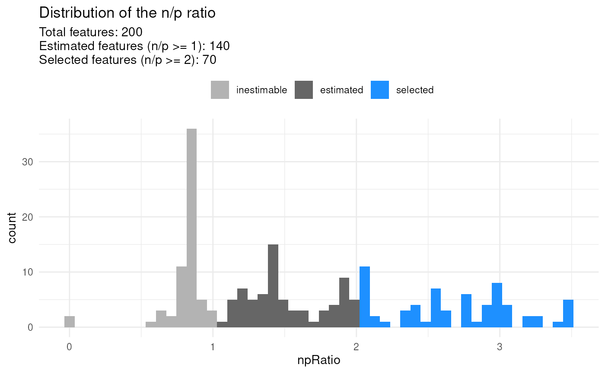

Function to estimate a linear model for each feature (peptide or protein) of a single-cell proteomics data set. This is the modelling step of the scplainer workflow.
Usage
scpModelWorkflow(object, formula, i = 1, name = "model", verbose = TRUE)
scpModelFilterPlot(object, name)Arguments
- object
An object that inherits from the
SummarizedExperimentclass.- formula
A
formulaobject controlling which variables are to be modelled.- i
A
logical,numericorcharacterindicating which assay ofobjectto use as input for modelling. Only a single assay can be provided. Defaults to the first assays.- name
A
character(1)providing the name to use to store or retrieve the modelling results. When retrieving a model andnameis missing, the name of the first model found inobjectis used.- verbose
A
logical(1)indicating whether to print progress to the console.
Input data
The main input is object that inherits from the
SummarizedExperiment class. The quantitative data will be
retrieve using assay(object). If object contains multiple
assays, you can specify which assay to take as input thanks to the
argument i, the function will then assume assay(object, i) as
quantification input .
The objective of modelling single-cell proteomics data is to
estimate, for each feature (peptide or protein), the effect of
known cell annotations on the measured intensities. These annotations
may contain biological information such as the cell line,
FACS-derived cell type, treatment, etc. We also highly recommend
including technical information, such as the MS acquisition run
information or the chemical label (in case of multiplexed
experiments). These annotation must be available from
colData(object). formula specifies which annotations to use
during modelling.
Data modelling workflow
The modelling worflow starts with generating a model matrix for
each feature given the colData(object) and formula. The model
matrix for peptide \(i\), denoted \(X_i\), is adapted to the
pattern of missing values (see section below). Then, the functions
fits the model matrix against the quantitative data. In other
words, the function determines for each feature \(i\) (row in
the input data) the contribution of each variable in the model.
More formally, the general model definition is:
$$Y_i = \beta_i X^T_{(i)} + \epsilon_i$$
where \(Y\) is the feature by cell quantification matrix, \(\beta_i\) contains the estimated coefficients for feature \(i\) with as many coefficients as variables to estimate, \(X^T_{(i)}\) is the model matrix generated for feature \(i\), and \(\epsilon\) is the feature by cell matrix with residuals.
The coefficients are estimated using penalized least squares regression. Next, the function computes the residual matrix and the effect matrices. An effect matrix contains the data that is captured by a given cell annotation. Formally, for each feature \(i\):
$$\hat{M^f_i} = \hat{\beta^f_i} X^{fT}_{(i)} $$
where \(\hat{M^f}\) is a cell by feature matrix containing the variables associated to annotation \(f\), \(\hat{\beta^f_i}\) are the estimated coefficients associated to annotation \(f\) and estimated for feature \(i\), and \(X^{fT}_{(i)}\) is the model matrix for peptide \(i\) containing only the variables to annotation \(f\).
All the results are stored in an ScpModel object which is stored
in the object's metadata. Note that multiple models can be
estimated for the same object. In that case, provide the name
argument to store the results in a separate ScpModel.
Feature filtering
The proportion of missing values for each features is high in
single-cell proteomics data. Many features can typically contain
more coefficients to estimate than observed values. These features
cannot be estimated and will be ignored during further steps.
These features are identified by computing the ratio between the
number of observed values and the number of coefficients to
estimate. We call it the n/p ratio. Once the model is
estimated, use scpModelFilterPlot(object) to explore the
distribution of n/p ratios across the features. You can also
extract the n/p ratio for each feature using
scpModelFilterNPRatio(object). By default, any feature that has
an n/p ratio lower than 1 is ignored. However, feature with an
n/p ratio close to 1 may lead to unreliable outcome because there
are not enough observed data. You could consider the n/p ratio as
the average number of replicate per coefficient to estimate.
Therefore, you may want to increase the n/p threshold. You can do
so using scpModelFilter(object) <- npThreshold.
About missing values
The data modelling workflow is designed to take the presence of missing values into account. We highly recommend to not impute the data before modelling. Instead, the modelling approach will ignore missing values and will generate a model matrix using only the observed values for each feature. However, the model matrices for some features may contain highly correlated variables, leading to near singular designs. We include a small ridge penalty to reduce numerical instability associated to correlated variables.
References
scplainer: using linear models to understand mass spectrometry-based single-cell proteomics data Christophe Vanderaa, Laurent Gatto bioRxiv 2023.12.14.571792; doi: https://doi.org/10.1101/2023.12.14.571792.
See also
This function is part of the scplainer workflow, which also consists of ScpModel-VarianceAnalysis, ScpModel-DifferentialAnalysis, ScpModel-ComponentAnalysis to explore the model results
ScpModel provides functions to extract information from
the ScpModel object.
scpKeepEffect and scpRemoveBatchEffect perform batch correction for downstream analyses.
Examples
data("leduc_minimal")
leduc_minimal
#> class: SingleCellExperiment
#> dim: 200 73
#> metadata(1): model
#> assays(1): ''
#> rownames(200): SAVEDEGLK APNVVVTR ... FLLAVSRDR EASMVITESPAALQLR
#> rowData names(6): Sequence Reverse ... Leading.razor.protein.symbol
#> gene
#> colnames(73): eAL00219RI5 eAL00219RI6 ... wAL00286RI17 wAL00286RI18
#> colData names(12): Set Channel ... MedianCV passQC
#> reducedDimNames(0):
#> mainExpName: NULL
#> altExpNames(0):
## Overview of available cell annotations
colData(leduc_minimal)
#> DataFrame with 73 rows and 12 columns
#> Set Channel SampleAnnotation SampleType lcbatch
#> <character> <factor> <character> <character> <character>
#> eAL00219RI5 eAL00219 TMT128C u Monocyte C
#> eAL00219RI6 eAL00219 TMT129N u Monocyte C
#> eAL00219RI7 eAL00219 TMT129C u Monocyte C
#> eAL00219RI8 eAL00219 TMT130N u Monocyte C
#> eAL00219RI9 eAL00219 TMT130C u Monocyte C
#> ... ... ... ... ... ...
#> wAL00286RI12 wAL00286 TMT132N u Monocyte A
#> wAL00286RI14 wAL00286 TMT133N u Monocyte A
#> wAL00286RI16 wAL00286 TMT134N m Melanoma A
#> wAL00286RI17 wAL00286 TMT134C m Melanoma A
#> wAL00286RI18 wAL00286 TMT135N m Melanoma A
#> sortday digest MelanomaSubCluster NumberPeptides
#> <character> <character> <character> <integer>
#> eAL00219RI5 B 88 NA 2869
#> eAL00219RI6 B 88 NA 2752
#> eAL00219RI7 B 88 NA 2605
#> eAL00219RI8 B 88 NA 2533
#> eAL00219RI9 B 88 NA 2934
#> ... ... ... ... ...
#> wAL00286RI12 B 87 NA 2240
#> wAL00286RI14 B 87 NA 2052
#> wAL00286RI16 B 87 A 2533
#> wAL00286RI17 B 87 A 2480
#> wAL00286RI18 B 87 A 2546
#> MedianIntensity MedianCV passQC
#> <numeric> <numeric> <logical>
#> eAL00219RI5 7.28653 0.486676 TRUE
#> eAL00219RI6 7.20664 0.466900 TRUE
#> eAL00219RI7 7.11200 0.459270 TRUE
#> eAL00219RI8 7.05177 0.468643 TRUE
#> eAL00219RI9 7.37988 0.507540 TRUE
#> ... ... ... ...
#> wAL00286RI12 6.89256 0.565737 TRUE
#> wAL00286RI14 6.88984 0.479487 TRUE
#> wAL00286RI16 7.15227 0.478197 TRUE
#> wAL00286RI17 7.08841 0.457700 TRUE
#> wAL00286RI18 7.02233 0.451006 TRUE
####---- Model data ----####
f <- ~ 1 + ## intercept
Channel + Set + ## batch variables
MedianIntensity +## normalization
SampleType ## biological variable
leduc_minimal <- scpModelWorkflow(leduc_minimal, formula = f)
#> Warning: An element called 'model' is already present in the metadata. The associated content will be overwritten.
#>
|
| | 0%
|
|= | 1%
|
|= | 2%
|
|== | 2%
|
|== | 3%
|
|== | 4%
|
|=== | 4%
|
|==== | 5%
|
|==== | 6%
|
|===== | 6%
|
|===== | 7%
|
|===== | 8%
|
|====== | 8%
|
|====== | 9%
|
|======= | 10%
|
|======== | 11%
|
|======== | 12%
|
|========= | 12%
|
|========= | 13%
|
|========= | 14%
|
|========== | 14%
|
|========== | 15%
|
|=========== | 16%
|
|============ | 16%
|
|============ | 17%
|
|============ | 18%
|
|============= | 18%
|
|============= | 19%
|
|============== | 20%
|
|=============== | 21%
|
|=============== | 22%
|
|================ | 22%
|
|================ | 23%
|
|================ | 24%
|
|================= | 24%
|
|================== | 25%
|
|================== | 26%
|
|=================== | 26%
|
|=================== | 27%
|
|=================== | 28%
|
|==================== | 28%
|
|==================== | 29%
|
|===================== | 30%
|
|====================== | 31%
|
|====================== | 32%
|
|======================= | 32%
|
|======================= | 33%
|
|======================= | 34%
|
|======================== | 34%
|
|======================== | 35%
|
|========================= | 36%
|
|========================== | 36%
|
|========================== | 37%
|
|========================== | 38%
|
|=========================== | 38%
|
|=========================== | 39%
|
|============================ | 40%
|
|============================= | 41%
|
|============================= | 42%
|
|============================== | 42%
|
|============================== | 43%
|
|============================== | 44%
|
|=============================== | 44%
|
|================================ | 45%
|
|================================ | 46%
|
|================================= | 46%
|
|================================= | 47%
|
|================================= | 48%
|
|================================== | 48%
|
|================================== | 49%
|
|=================================== | 50%
|
|==================================== | 51%
|
|==================================== | 52%
|
|===================================== | 52%
|
|===================================== | 53%
|
|===================================== | 54%
|
|====================================== | 54%
|
|====================================== | 55%
|
|======================================= | 56%
|
|======================================== | 56%
|
|======================================== | 57%
|
|======================================== | 58%
|
|========================================= | 58%
|
|========================================= | 59%
|
|========================================== | 60%
|
|=========================================== | 61%
|
|=========================================== | 62%
|
|============================================ | 62%
|
|============================================ | 63%
|
|============================================ | 64%
|
|============================================= | 64%
|
|============================================== | 65%
|
|============================================== | 66%
|
|=============================================== | 66%
|
|=============================================== | 67%
|
|=============================================== | 68%
|
|================================================ | 68%
|
|================================================ | 69%
|
|================================================= | 70%
|
|================================================== | 71%
|
|================================================== | 72%
|
|=================================================== | 72%
|
|=================================================== | 73%
|
|=================================================== | 74%
|
|==================================================== | 74%
|
|==================================================== | 75%
|
|===================================================== | 76%
|
|====================================================== | 76%
|
|====================================================== | 77%
|
|====================================================== | 78%
|
|======================================================= | 78%
|
|======================================================= | 79%
|
|======================================================== | 80%
|
|========================================================= | 81%
|
|========================================================= | 82%
|
|========================================================== | 82%
|
|========================================================== | 83%
|
|========================================================== | 84%
|
|=========================================================== | 84%
|
|============================================================ | 85%
|
|============================================================ | 86%
|
|============================================================= | 86%
|
|============================================================= | 87%
|
|============================================================= | 88%
|
|============================================================== | 88%
|
|============================================================== | 89%
|
|=============================================================== | 90%
|
|================================================================ | 91%
|
|================================================================ | 92%
|
|================================================================= | 92%
|
|================================================================= | 93%
|
|================================================================= | 94%
|
|================================================================== | 94%
|
|================================================================== | 95%
|
|=================================================================== | 96%
|
|==================================================================== | 96%
|
|==================================================================== | 97%
|
|==================================================================== | 98%
|
|===================================================================== | 98%
|
|===================================================================== | 99%
|
|======================================================================| 100%
####---- n/p feature filtering ----####
## Get n/p ratios
head(scpModelFilterNPRatio(leduc_minimal))
#> SAVEDEGLK APNVVVTR IVVVTAGVR GFQEVVTPNIFNSR ENAYDLEANLAVLK
#> 1.277778 3.476190 1.411765 2.333333 1.235294
#> IGPLGLSPK
#> 1.888889
## Plot n/p ratios
scpModelFilterPlot(leduc_minimal)
#> To change the threshold, use:
#> scpModelFilterThreshold(object, name) <- threshold

## Change n/p ratio threshold
scpModelFilterThreshold(leduc_minimal) <- 2
scpModelFilterPlot(leduc_minimal)
#> To change the threshold, use:
#> scpModelFilterThreshold(object, name) <- threshold
